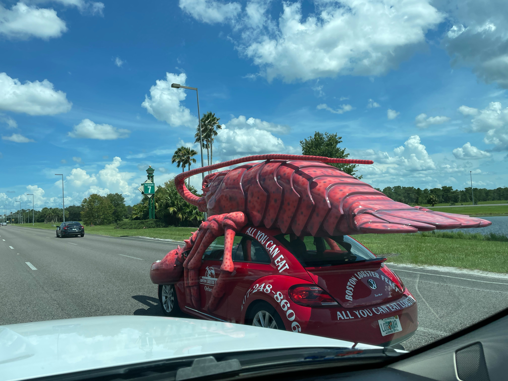

So Week 6 is done! Whoop! I am officially 2/3rds of the way done with the MTC! That's right, I am
in training for another 3 weeks!! It is sorta weird not gonna lie! For the next 3 weeks we're
shifting our focus from French to learning Tahitian. New language, new instructors, and new
schedules. And the opportunity to learn two languages so tied to my roots means the world to me!
I know, it's not German or Tongan, both languages are close neighboring friends to those
countries so I'll count it as an absolute score! I am so grateful for my roots and my family.
They are just the best! I know I got my families on the other side of the veil helping me with
all the content I am learning!
This week I got so much done! It was so crazy, we had so many awesome moments this week, and
great laughs. I have so many amazing people in my district who make me laugh everyday! Every
morning we have a competition on who brings the best "snack", from swan carved apples,
pizza-sized cookies, to 50 layer crepes, it has quickly grown to a very competitive event.
Well yesterday Elder Campbell brought these pretzels and he told us they were "homemade"
they
looked beautiful. BUT after we voted for him, he found out that his parents misinformed him and
that they were STORE BOUGHT! It caused mayhem and we had to do a whole revote. It was crazy. I
love Elder Campbell. He brings so much to our district and he is hilarious. Man is incredible!
Notable Highlights
- We pranked our former Instructor Soeur Lunt's zoom room by sneaking in as other people into her class! It was super fun!
- We joined two other French districts this pass week for a class or two. It was so fun to be able to see other missionaries doing the same things we're doing but going to Africa or Europe.
- Elder Rodgers, Elder Evans, and I had a surreal French teaching moment with music, hats, and virtual backgrounds haha!
- I have learned so much French and Tahitian this week
- We taught Dorothée again but I messed up understanding what she was saying and just abruptly changed the topic *facepalm* thank you Elder Smith for your patience with me.
- I ran sprints and practiced some Rugby this week!! We decided who would teach first based on which Hunger Game district we were. Let me know which one you are!!
- I became host for some reason in one of our Zoom Sessions and was able to Prank Soeur Elliott 👀
- The BYU V UTAH game is tonight! Congrats and Good luck Chloee Uluave (She made the BYU CHEER TEAM! )
Spiritual Thought
"Jesus walked such a long, lonely path utterly alone, [so] we do not have to do so."
This quote is from Elder Holland's address None were with him I love this address because it highlights how we don't have to do things alone. We always have someone else behind us. Christ. He is the one who is able to help lift us in times of struggles. I've been able to see it so much already just within these past 6 weeks.
 Find more photos here MTC Photo Album